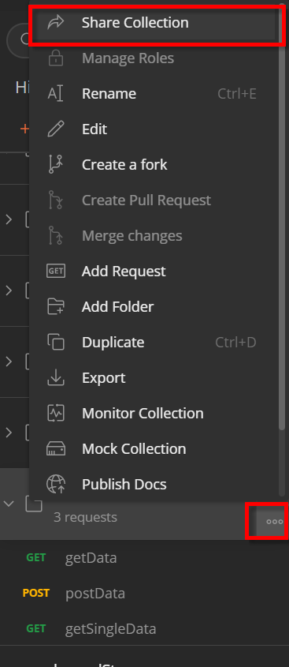

DAY15-postman的分享與匯入
DAY15-postman的分享與匯入
postman系列文的最後一篇，如何分享postman的collection或匯入別人分享的collection。
使用情境
在前後端共同開發一個新功能的時候，溝通的媒介就是API。不論是前端訂好Collection或是後端訂好Collection(通常是後端)，都有分享和匯入的需求。將自己的Collection分享給對方或是使用對方的Collection
分享collection
分享的方式分為兩種，一種是以連結的形式分享，一種是以檔案的形式分享
使用連結分享
點擊collection旁邊的”…”按鈕，可以看到 Share Collection的選項

點擊之後，會跳出一個視窗問你要以何種方式分享，點選 Get public link 的頁籤

點Get public link的按鈕之後，就可以看到分享的連結。就可以將這個連結分享給其他人囉

使用連結分享的注意事項
- 連結分享的內容是取得連結的當下狀態，如果之後還有更新Collection的話，要點擊
Update Link才會更新。否則內容不會變動 - 連結是公開的，只要任何有連結的人都可以存取。如果有保密的考量，請勿使用此種方式分享
使用檔案分享
點擊collection旁邊的”…”按鈕，可以看到 Export的選項

接著就會彈出一個視窗問你要以什麼格式匯出，基本上不用修改設定，就用最新的格式就好了

點擊 Export 後，就會問你要儲存在哪裡，儲存好之後就可以看到檔案匯出完成囉。

匯入collection
在左上角的地方有 import 的按鈕

點擊之後可以看到好多頁籤
匯入檔案
點擊 File 頁籤，點 Upload Files 按鈕即可匯入檔案，匯入之後就成功囉

匯入連結
點擊 Link 頁籤，可以看到輸入框，將URL貼上之後，點擊 Continue 之後，就匯入成功囉